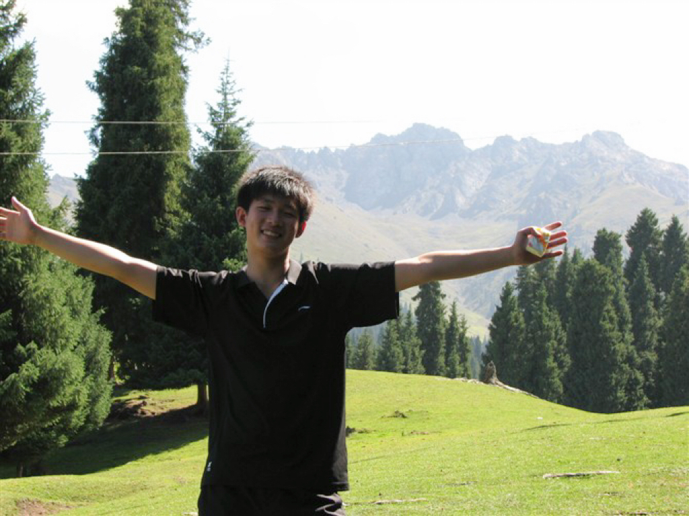

Danyang Liu
Research Scientist @ Reka AI
Ph.D. @ University of Edinburgh
About Me
I am a Research Scientist at Reka AI, where I work on VLM architecture, multimodal data pipelines, model training, evaluation, and creating multimodal agents. I completed my Ph.D. at the University of Edinburgh, working on vision-and-language research with Prof. Frank Keller and Prof. Mirella Lapata. I previously interned at Amazon Prime Video and Huawei Edinburgh Research Centre.
My research interests include:
- Frontier VLMs and world models: architecture design, data-centric modeling, and evaluation
- Multimodal agents for long-video editing, deep research, and product-facing AI workflows
- Grounded and controllable vision-language generation from image sequences
Preprints
-
MMCOMET: A Large-Scale Multimodal Commonsense Knowledge Graph for Contextual Reasoning
Eileen Wang, Hiba Arnaout, Dhita Putri Pratama, Shuo Yang, Danyang Liu, Jie Yang, Josiah Poon, Jeff Z. Pan, Soyeon Caren Han
Submitted to NeurIPS 2026, Under review.
Publications
-
Generating Visual Stories with Grounded and Coreferent Characters
Danyang Liu, Mirella Lapata, Frank Keller
Transactions of the Association for Computational Linguistics (TACL), 2025.
-
Detect, Disambiguate, and Translate: On-Demand Visual Reasoning for Multimodal Machine Translation with Large Vision-Language Models
Danyang Liu, Fanjie Kong, Xiaohang Sun, Dhruva Patil, Avijit Vajpayee, Zhu Liu, Vimal Bhat, Najmeh Sadoughi
North American Chapter of the Association for Computational Linguistics (NAACL), 2025.
-
TrustScore: Reference-Free Evaluation of LLM Response Trustworthiness
Danna Zheng, Danyang Liu, Mirella Lapata, Jeff Z. Pan
Secure and Trustworthy Large Language Models Workshop (SeT-LLM @ ICLR), 2024.
-
Visual Storytelling with Question-Answer Plans
Danyang Liu, Mirella Lapata, Frank Keller
Empirical Methods in Natural Language Processing (EMNLP Findings), 2023.
-
Detecting and Grounding Important Characters in Visual Stories
Danyang Liu and Frank Keller
AAAI Conference on Artificial Intelligence (AAAI), 2023.
-
Automatically Discarding Straplines to Improve Data Quality for Abstractive News Summarization
Amr Keleg*, Matthias Lindemann*, Danyang Liu*, Wanqiu Long*, Bonnie L. Webber
(*=Equal contribution)
NLP Power! The First Workshop on Efficient Benchmarking (ACL Workshop), 2022.
-
A Character-Centric Neural Model for Automated Story Generation
Danyang Liu, Juntao Li, Meng-Hsuan Yu, Gongshen Liu, Rui Yan
AAAI Conference on Artificial Intelligence (AAAI), 2020.
-
Draft and Edit: Automatic Storytelling Through Multi-Pass Hierarchical Conditional Variational Autoencoder
Meng-Hsuan Yu, Juntao Li, Danyang Liu, Rui Yan
AAAI Conference on Artificial Intelligence (AAAI), 2020.
-
A Transformer-Based Variational Auto Encoder for Sentence Generation
Danyang Liu and Gongshen Liu
International Joint Conference on Neural Networks (IJCNN), 2019.
Background
-
PhD, University of Edinburgh, Edinburgh, U.K. 2026
-
Master, Shanghai Jiao Tong University, Shanghai, China. 2020
- Bachelor, Southeast University, Nanjing, China. 2017
Last updated in May, 2026.